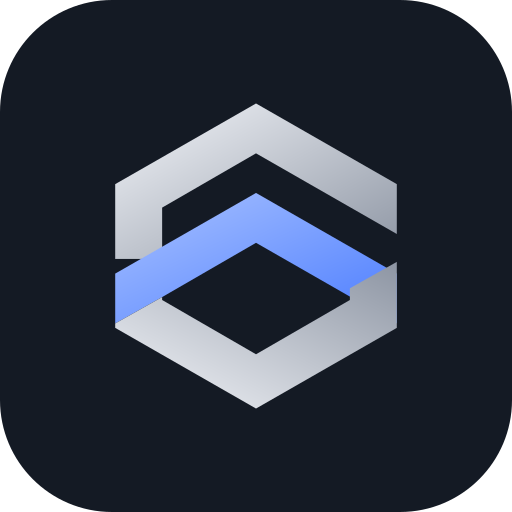

SLATE·SPACEA workspace for SAP development work
SLATE·SPACE keeps everything about a change in one place: the ticket with its acceptance criteria and tests, the SAP objects and transports behind it, the time spent, the plan and the knowledge you gained on the way.
What it does
- Tickets and projectsA list and a board with drag and drop, acceptance criteria, test cases, a release checklist, comments, files and screenshots.
- Transports and objectsTrack each transport from development to production and see which objects a change touches.
- Time and insightsTimer and week timesheet, estimate against actual, progress and hours charts.
- Calendar and timelineDue dates, meetings and a Gantt timeline with planned starts and dependencies.
- Knowledge baseSnippets, error fixes, API examples and design decisions, linked to tickets and objects.
- TeamsOrganizations, sharing of single tickets or whole projects with view, comment or edit access, and a history of every change.
Google sign-in and Google Calendar
You can sign in with your Google account; SLATE·SPACE then receives your name, email address and profile picture.
Connecting Google Calendar is optional. When you connect it, SLATE·SPACE uses Google's permission to show your calendar events next to your ticket due dates on the Calendar page, and to create meetings you add in SLATE·SPACE in your Google Calendar. It does not change or delete existing events and does not store your events. You can disconnect at any time in Account → Calendar or in your Google account settings.
SLATE·SPACE's use of information received from Google APIs adheres to the Google API Services User Data Policy, including the Limited Use requirements. Details: privacy policy.
Your data
Each account sees only its own data and what others explicitly share with it. Sign-in has a second step (an emailed code or an authenticator app). You can delete your account and all its data at any time in Account.